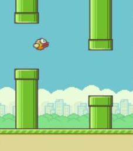

Ray Traced ... Flappy Bird?Deployed to the App Store and Google Play.
Drag the canvas to pivot the camera. "Space" to go up. "X" to go down. |
 |
Water Implementation Details
The water surface height is described by 32 random, stacked, planar sin2 waves.
- To feel like real water, each wave's speed must be a function of its wavelength and Earth's gravity.
- The surface height function is readily differentiable at each pixel to find the surface normal.
d/dt(D*sin2(t)) == 2*D*sin(t)*cos(t)
- Snell's law tells us the direction of refraction.
- Fresnel's equations tell us how to mix the reflected and refracted light.
Some 2015 era mobile GPUs struggled with 64 trig functions per pixel
(2*D*sin(t)*cos(t) x 32 waves).
- Solved by pre-rendering water surface normals into an offscreen 256x256 texture every frame.
- Made the texture tileable by snapping wavelengths to even divisors of 256 in x and y both.